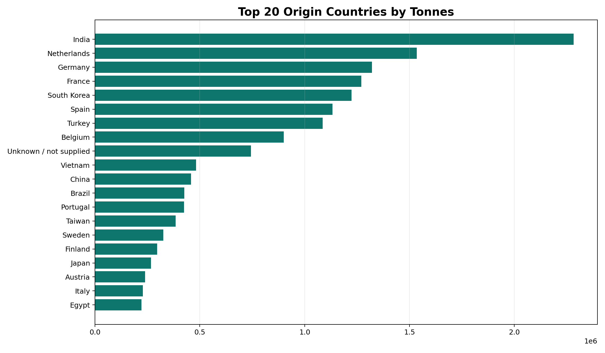
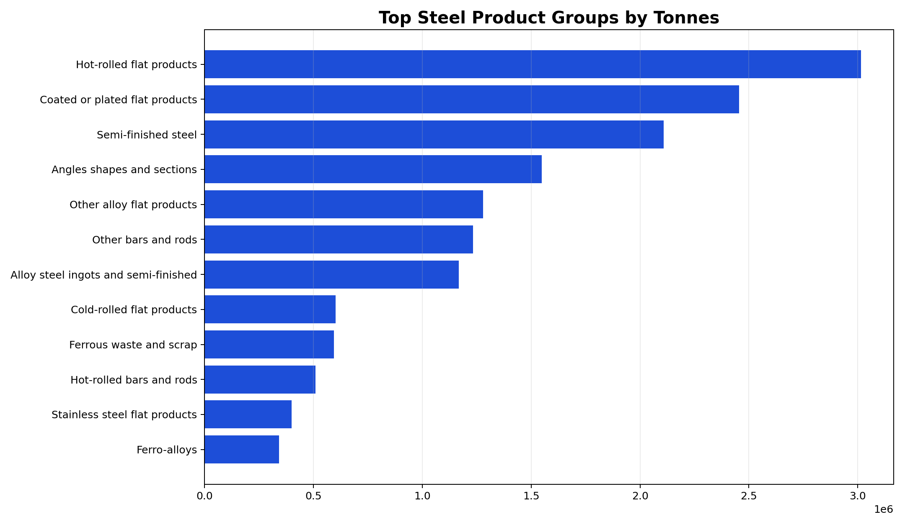
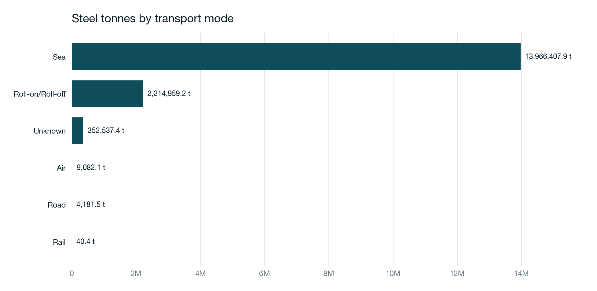
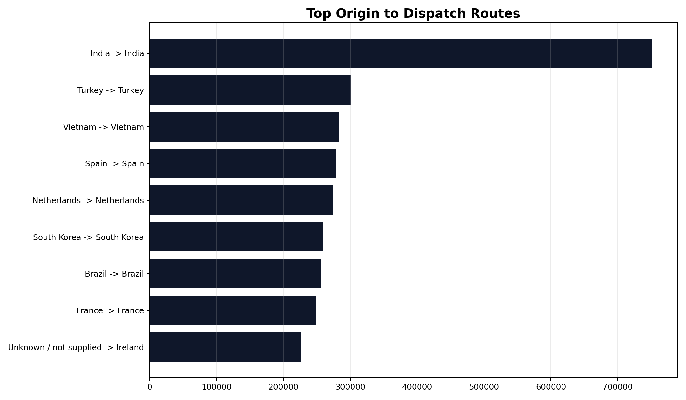

HMRC trade intelligence
A polished 2024 to 2026 year-to-date analysis layer for Chapter 72 imports, built from HMRC bulk files and packaged for direct use on the website, in Excel, and in downstream commercial reviews.
Country picture
The country view keeps origin and dispatch separate so we can see where steel is made versus where it is commercially shipped from. That avoids the usual shortcut of treating dispatch hubs as manufacturing origin.
Company picture
Company continuity is tracked by normalized company identity and monthly commodity activity, while deliberately avoiding any false company-to-country or company-to-shipment inference.
Transport picture
Reported HMRC transport modes are preserved as fact. Where mode is missing or unreliable, a separate inference layer estimates the most likely mode with a confidence score.




Top suppliers
| Country | Tonnes | Value | Share | Main product group |
|---|
Importer continuity
Route detail
Downloads